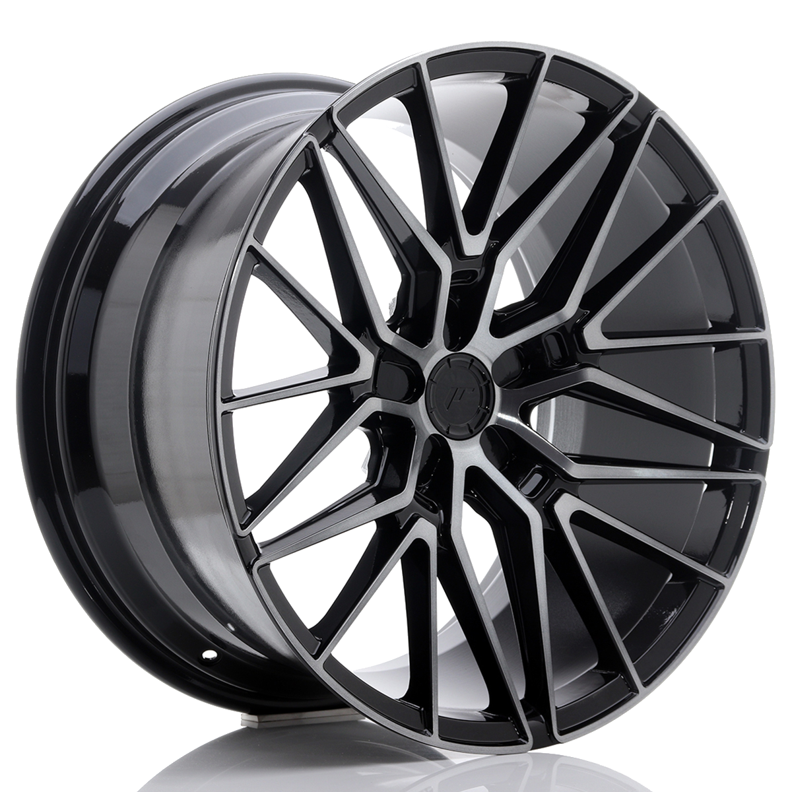

Bemutatkozás
Cégünk a 2000-es évek közepe óta foglalkozik utcai és verseny, illetve tuning alkatrészek forgalmazásával. Saját tervezésű, azonban kiemelkedő minőségű alufelniket biztosítunk utcai vagy akár versenyfelhasználásra! A felni gyártásban szerzett sok éves tapasztalatunk és a legmodernebb technológiák segítségével olyan megoldásokat kínálunk ügyfeleinknek, amik garantálják a tökéletes gyártási minőséget. Felnijeink könnyű, erős, különleges könnyűfémből készültek, így nem a súly lesz a kifogás. Szinte bármilyen autótípusra, akár készletről! Nálunk megtalálhatóak az Extra konkáv, extra széles peremes nagyon különleges felnik is! Amennyiben kérdés merülne fel, vagy nem találja a keresett alkatrészt, kérem írjon vagy hívjon az elérhetőségeink valamelyikén keresztül!
Bemutatkozik az új JR-38
A Japan Racing Wheels JR-38 felni a ragadozó gyorsaságot és az erőt sugallja minimalizmussal kombinálva. Ez a felnistílus azoknak az ügyfeleknek szól, akik értékelik a dinamizmust és az eleganciát. A JR-38 kovácsolt felnit nagyon magas nyomáson egyetlen alumíniumtömbből állítják elő, így a végeredmény nagyon tömör és rendkívül strapabíró.
